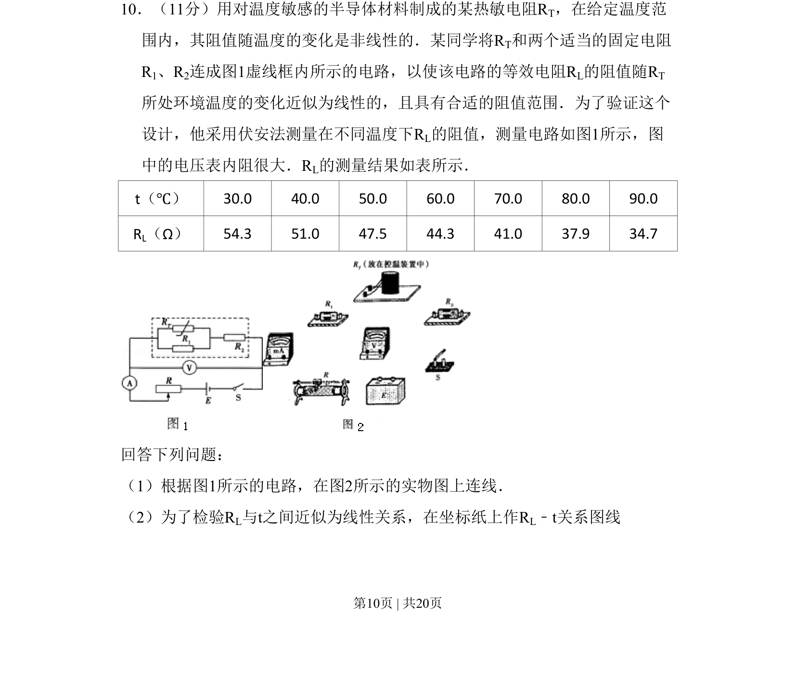
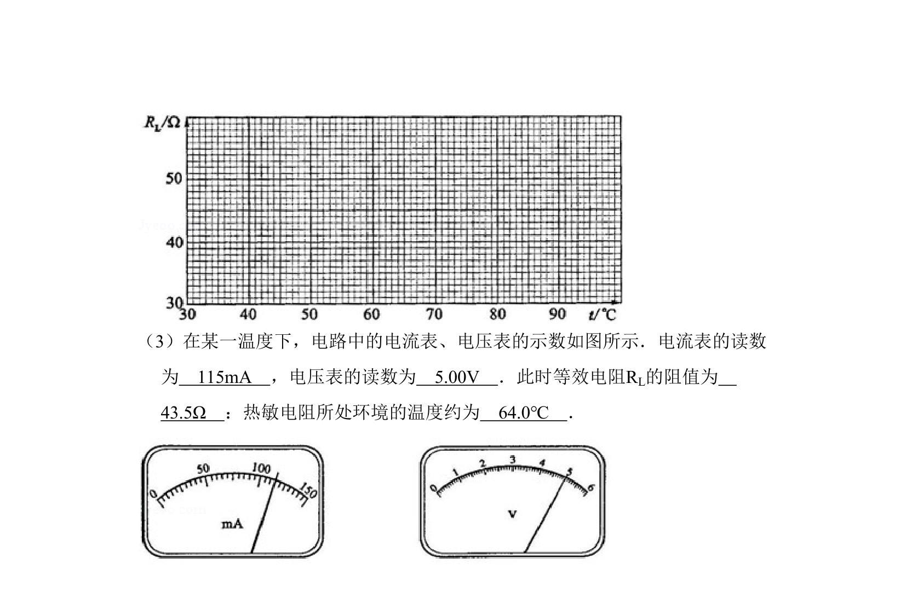
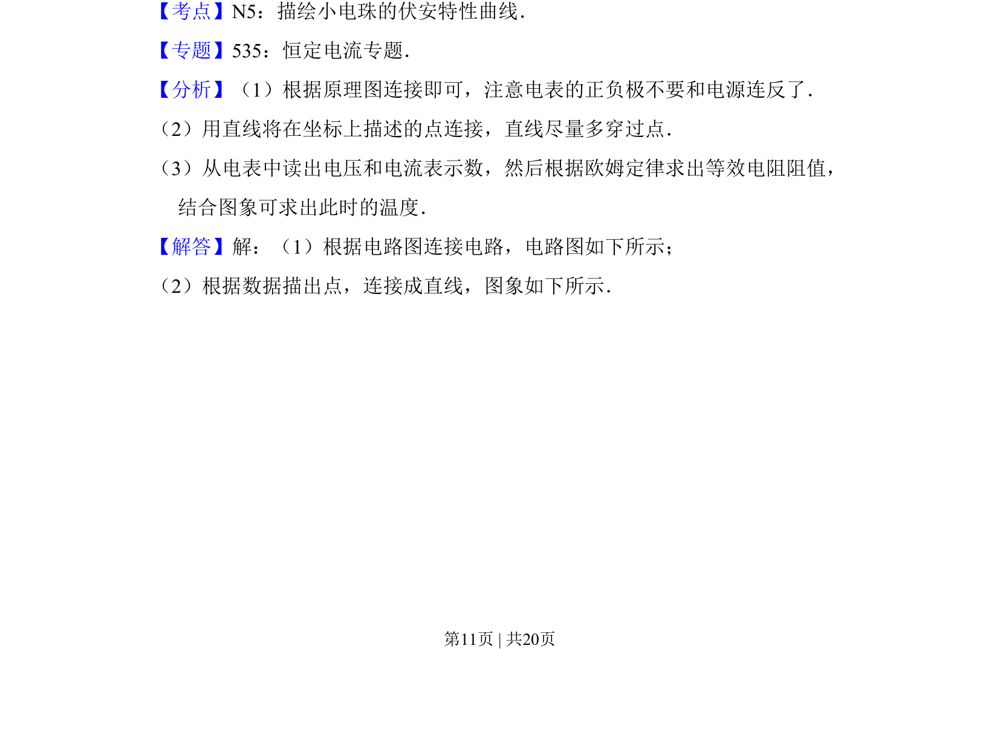
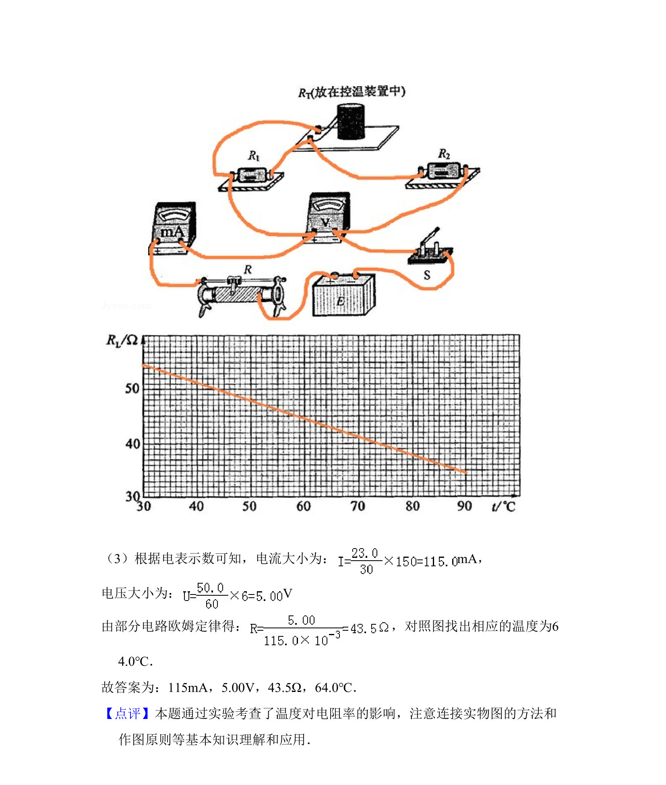

考点：伏安法 线性关系验证 热敏电阻特性 实验数据处理


该题考查利用伏安法测量热敏电阻等效电阻，并通过作图验证其线性关系的实验设计与数据处理。


📄 原 PDF 第 10 页：
素材/真题/吉林/2008-2024·（吉林）物理高考真题/2010年高考物理试卷（新课标Ⅰ）（解析卷）.pdf
10．（11分）用对温度敏感的半导体材料制成的某热敏电阻RT，在给定温度范 围内，其阻值随温度的变化是非线性的．某同学将RT和两个适当的固定电阻 R1、R2连成图1虚线框内所示的电路，以使该电路的等效电阻RL的阻值随RT 所处环境温度的变化近似为线性的，且具有合适的阻值范围．为了验证这个 设计，他采用伏安法测量在不同温度下RL的阻值，测量电路如图1所示，图 中的电压表内阻很大．RL的测量结果如表所示． t（℃） 30.0 40.0 50.0 60.0 70.0 80.0 90.0 RL（Ω） 54.3 51.0 47.5 44.3 41.0 37.9 34.7 回答下列问题： （1）根据图1所示的电路，在图2所示的实物图上连线． （2）为了检验RL与t之间近似为线性关系，在坐标纸上作RL﹣t关系图线